Mikrocomputertechnik 1
Einheit 4: Funktionen und Stack
Aus einem Rechenblock wird eine Funktion
- Bekannt: Werte in Registern,
lw/sw,jund Bedingungen - Neu: hineinrufen und zum jeweiligen Aufrufer zurückkehren
- Neu: Werte über weitere Aufrufe hinweg erhalten
- Leitbeispiel: \(\operatorname{Calc}(a,b)=2a+b\)
Welche Fragen ein Aufruf beantworten muss
- Wo wird nach dem Unterprogramm weitergearbeitet?
- Wo liegen Eingaben und das einzelne 32-Bit-Ergebnis?
- Welche alten Registerwerte bleiben zugesichert?
- Wo liegen Sicherungen mehrerer aktiver Aufrufe?
Ein Aufruf erzeugt keine eigenen Architekturregister.
1. Hinweg und dynamischer Rückweg
Zwei Aufrufstellen, zwei Fortsetzungen
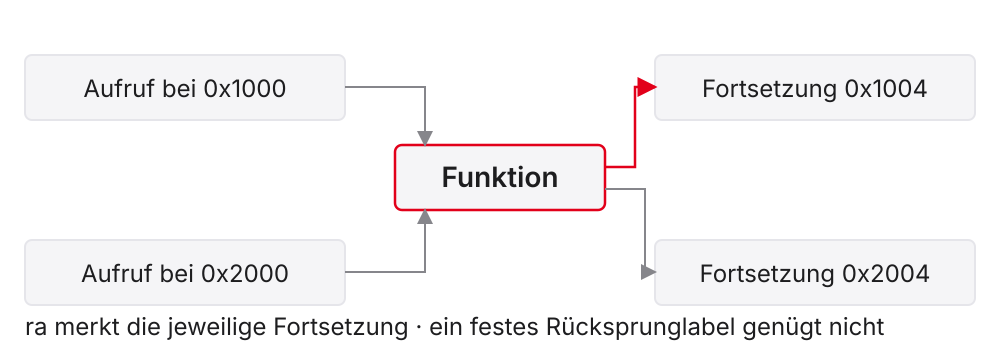
jal: zwei Werte aus dem alten PC
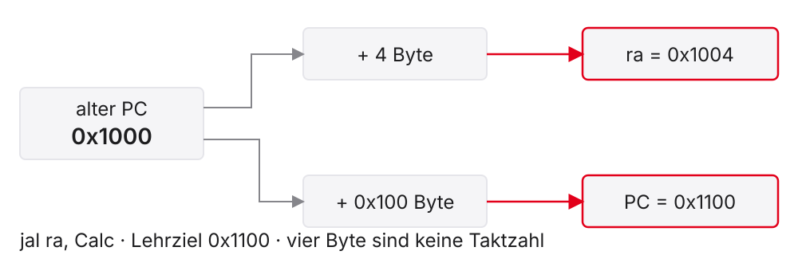
\[R[rd]_{\text{neu}}=PC_{\text{alt}}+4,\qquad PC_{\text{neu}}=PC_{\text{alt}}+\Delta\]
jalr benutzt eine Registeradresse
\[T=(R[rs1]+\operatorname{sext}_{12\to32}(imm))\bmod2^{32}\]
jalr rd, imm(rs1):
- Ziel: \(T\) mit gelöschtem Bit 0
- Linkwert: alter PC plus vier Byte nach
rd - Rückkehrfall:
jalr x0, 0(ra)
Bit 0 löschen garantiert keine Vier-Byte-Grenze
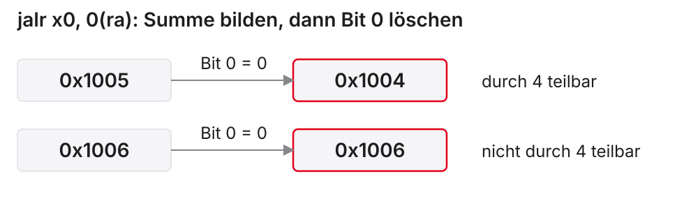
Die Kursbasis ohne C benötigt ausgerichtete Instruktionsziele.
ret springt; es räumt nicht auf
ret ist die Pseudoinstruktion für jalr x0, 0(ra).
raliefert den aktuellen Rückweg.x0verwirft den Linkwert.- Ergebnisregister, Sicherungen und
spwerden nicht restauriert. - Ein falsches
rableibt ein falscher Rückweg.
Ein vollständiges Leaf-Beispiel
2. Ein gemeinsamer Registervertrag
ABI und Aufrufkonvention
- ABI: Application Binary Interface, binäre Schnittstellenvereinbarung
- Aufrufteil: Argumente, Ergebnis, Registererhaltung, Stackausrichtung
a0–a7: einfache 32-Bit-Argumentea0: hier ein einzelnes 32-Bit-Integer-Ergebnis- Kurskonvention ILP32; Stackzeiger an Aufrufgrenzen durch 16 teilbar
Sum: Argumente werden zum Ergebnis
Ausschnitt: Der vollständige Hauptprogrammabschluss steht im Beispiel.
Caller und Callee sind relative Rollen
main → Calc → Sum
| Aufruf | Caller: Aufrufer | Callee: Aufgerufener |
|---|---|---|
main ruft Calc |
main |
Calc |
Calc ruft Sum |
Calc |
Sum |
Calc muss beide Seiten des Vertrags erfüllen.
Caller-saved heißt nicht automatisch gelöscht
- Nicht als erhalten zugesichert:
t0–t6,a0–a7,ra - Caller erhält einen alten Wert, wenn er ihn nach dem Aufruf noch braucht.
- Ein unbenutzter alter Wert benötigt keine Sicherung.
- Beobachtetes Unverändertbleiben ist kein allgemeiner Vertrag.
Callee-saved heißt am Ende wiederhergestellt
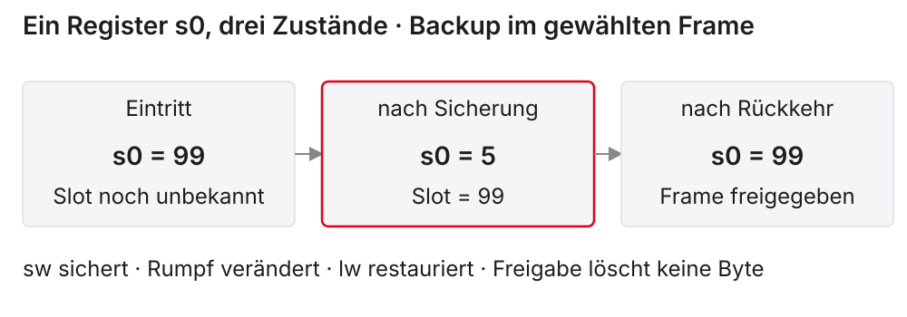
s0–s11: Eintrittswerte bei korrekter Rückkehr erhalten.
Sichern benötigt einen Ort und eine Lebensdauer
- Ein Registerbackup kann im passenden Fall genügen.
- Verschachtelte aktive Aufrufe brauchen getrennte Sicherungen.
- Ein fester gemeinsamer Slot kann überschrieben werden.
- Der Stack verwaltet Speicher passend zur Rückkehrreihenfolge.
3. Ein Speicherrahmen für aktive Werte
sp und LIFO
sp=x2: stack pointer, Stackzeiger- LIFO: Last In, First Out — inneren Frame zuerst freigeben
- Eintrittswert \(S\): gültig und durch 16 teilbar
- Reservieren:
addi sp, sp, -16 - Freigeben:
addi sp, sp, 16
Nutzbedarf und Framegröße unterscheiden
\[F=16\left\lceil\frac{B}{16}\right\rceil\]
| Nutzbedarf \(B\) | Frame \(F\) | Padding |
|---|---|---|
| 4 Byte | 16 Byte | 12 Byte |
| 8 Byte | 16 Byte | 8 Byte |
| 12 Byte | 16 Byte | 4 Byte |
| 20 Byte | 32 Byte | 12 Byte |
Ein Wort im 16-Byte-Frame
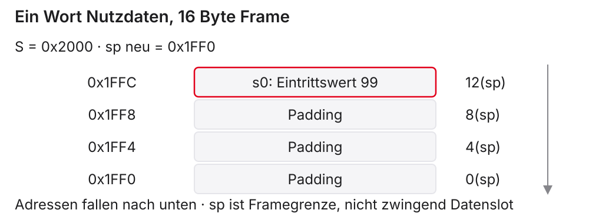
Reservieren und Speichern sind zwei Befehle
- Nach
addi: reserviert, Slotinhalt noch unbekannt - Nach
sw: Eintrittswert vons0als Kopie vorhanden - Die Quelle
s0bleibt beim Store unverändert.
Laden, dann den Frame freigeben
Der neue Slot gehört nach der Freigabe nicht mehr zum aktiven Frame.
Drei Sicherungen teilen sich einen Frame
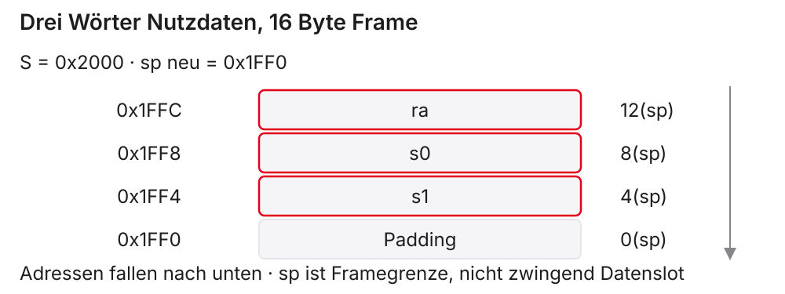
Für 12 Byte Nutzdaten genügt hier ein Frame von 16 Byte.
Ein Leaf kann trotzdem einen Frame brauchen
Freigabefehler lassen sp verschoben
Lehrstart \(S=\mathtt{0x2000}\):
| Aktion | sp |
|---|---|
| Prolog: −16 | 0x1FF0 |
| korrekter Epilog: +16 | 0x2000 |
| falscher Epilog: nur +8 | 0x1FF8 |
Ein korrektes Ergebnis allein beweist keine korrekte Rückkehr.
Verschachtelte Frames liegen getrennt
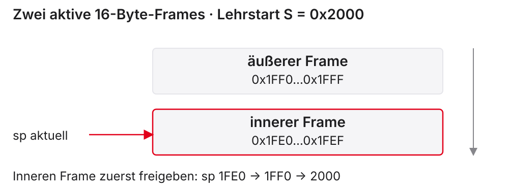
4. Calc ruft selbst einen Helfer auf
Non-Leaf: ra hat nun zwei Lebensdauern
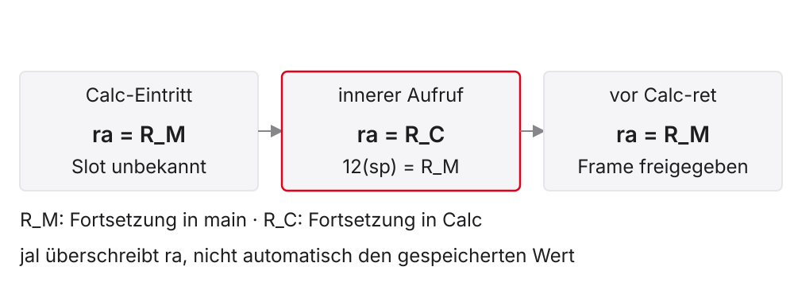
Ohne Backup kehrt das zweite ret falsch zurück
Nach Sum_bad.ret zeigt ra weiterhin auf calc_bad_return.
Calc reserviert zwei verschiedene Slots
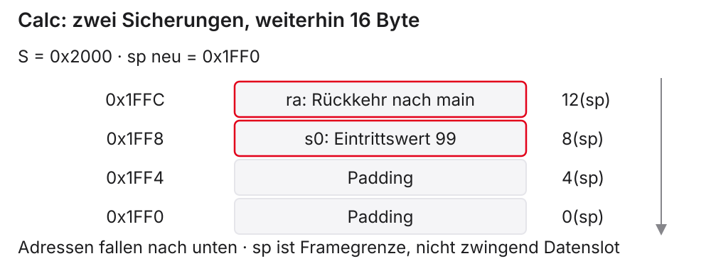
Der Rumpf bewahrt a und verwendet Sum
\[5+10=15,\qquad 15+5=20\]
a0 wird Ergebnis; das alte Argument bleibt während Sum in s0.
Der Epilog erhält das Ergebnis und stellt den Kontext her
Danach: a0=20, s0=99, sp=S; Fortsetzung in main.
Eine vollständige Zustandsfolge von Calc
\(R_M\): Fortsetzung in main; \(R_C\): Fortsetzung nach Sum.
| Kontrollpunkt | a0 |
s0 |
ra |
sp |
|---|---|---|---|---|
| Eintritt | 5 | 99 | \(R_M\) | \(S\) |
| gesichert, Argument kopiert | 5 | 5 | \(R_M\) | \(S-16\) |
| Sum zurück | 15 | 5 | \(R_C\) | \(S-16\) |
| Ergebnis gebildet | 20 | 5 | \(R_C\) | \(S-16\) |
| Slots geladen | 20 | 99 | \(R_M\) | \(S-16\) |
| zurück in main | 20 | 99 | \(R_M\) | \(S\) |
Die Rückkehr führt zum unmittelbaren Aufrufer
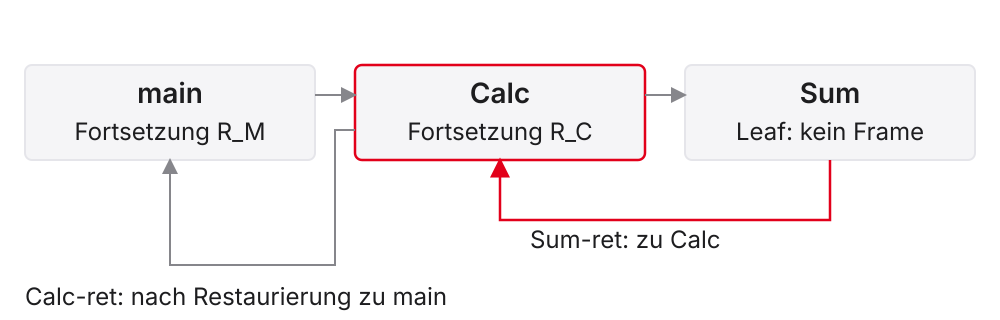
Mehrere Helfer brauchen nicht mehrere Kopien von R_M
- Eingehendes
raeinmal vor dem ersten inneren Aufruf sichern. - Weitere innere Aufrufe dürfen das Register erneut überschreiben.
- Der Slot muss die äußere Fortsetzung bis zum Epilog behalten.
- Erneutes
sw ra, 12(sp)kann die falsche Adresse darüber schreiben.
Auch der Caller kann einen t-Wert im Frame schützen
Ergebnis 35 auch dann, wenn der Helfer t0 überschreibt.
5. Vorhersage und Werkzeugbeobachtung
Das vollständige Hauptprogramm mit Calc
Calc und Sum: mct1_vl4_nested_calls_ok.s.
Kontrollpunkte statt zufälliger Steps
- Vor Aufruf: Argumente, Eintritts-
spund Erhaltungssignal notieren - Nach Prolog: zwei Slots relativ zum aktuellen
spprüfen - Nach Sum:
a0,s0und inneresraprüfen - Nach Calc: Ergebnis, ursprüngliches
s0,spund Fortsetzung prüfen - Kurs-Venus: tatsächlich erzeugte native Liste ansehen
Vier Eingabefälle, derselbe Erhaltungsvertrag
\[\operatorname{Calc}(a,b)=(2a+b)\bmod2^{32}\]
| Argumente \(a,b\) | signed Ergebnis | s0 danach |
sp danach |
|---|---|---|---|
| 5, 10 | 20 | 99 | \(S\) |
| 0, 0 | 0 | 99 | \(S\) |
| −3, 8 | 2 | 99 | \(S\) |
| 7, −10 | 4 | 99 | \(S\) |
Resultat und Erhaltung unabhängig prüfen.
Fehlersuche: welche Pflicht ist verletzt?
| Beobachtung | gezielt prüfen |
|---|---|
| falscher Rückweg | eingehendes ra vor innerem Aufruf erhalten? |
| falscher alter Wert | caller- oder callee-saved, gleiche Slotzuordnung? |
sp verschoben |
Framegröße vollständig freigegeben? |
| Summe vor Dienst richtig, Anzeige später anders | a0 bereits Dienstnummer? |
| unbekannte Slotwerte | tatsächlich vor dem Load gesichert? |
Selbstkontrolle vor dem Quiz
- Welcher alte Wert wird von
jal raverändert, welcher vonjnicht? - Warum ist
racaller-saved und wird trotzdem in Calc gesichert? - Sind drei Registerslots gleich drei 16-Byte-Frames?
- Kann
reteinen um acht Byte falschenspkorrigieren?
Optionale Vertiefung: rekursive Summe
\[S(n)=\begin{cases}0,&n=0\\n+S(n-1),&n>0\end{cases}\]
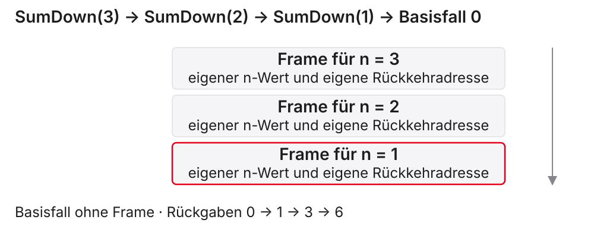
Für \(n=3\): Ergebnis 6; hier kein mul nötig.
Abschluss und Quellen
- Aufruf: Rückweg, Eingaben und Ergebnis müssen zusammenpassen.
- Erhaltung: alte Werte entsprechend ihrer Lebensdauer schützen.
- Stack: reservieren, speichern, laden und exakt freigeben.
- Einheit 5: bekannte Befehlswirkung als Datenpfad umsetzen.
- Harris/Harris und Patterson/Hennessy, jeweils RISC-V Edition